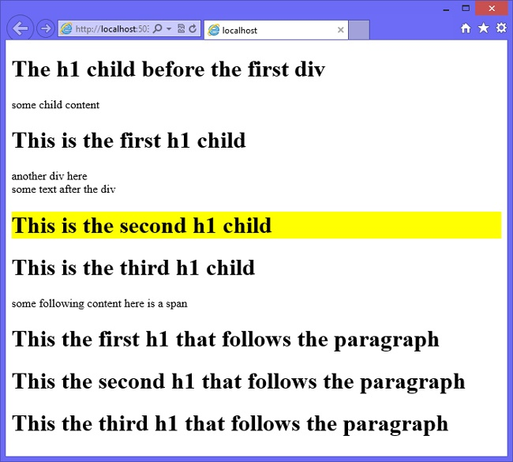
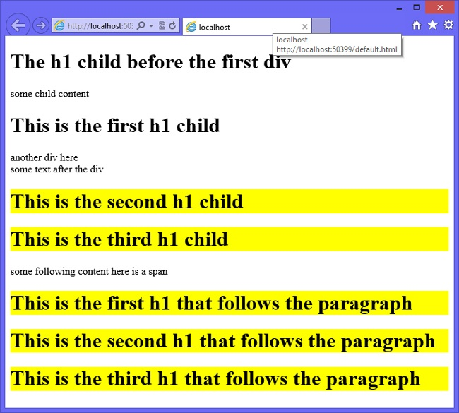
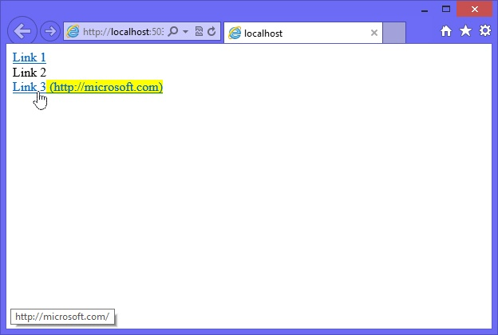
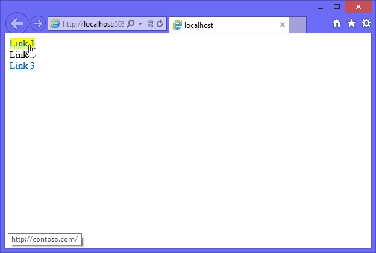
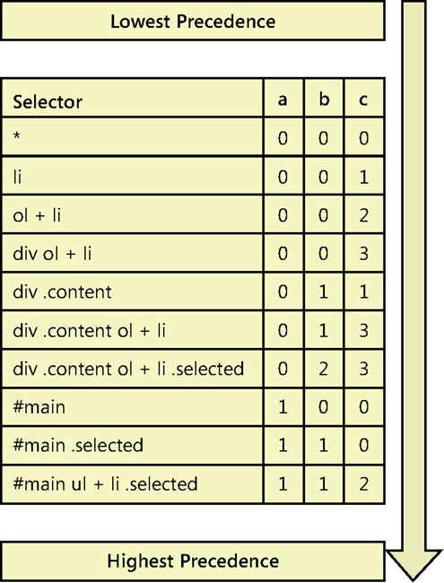

CSS Fundamentals
Introducing CSS3
- The principle of Cascading Style Sheets (CSS) has roots in Standardized Generalized Markup Language (SGML) from the 1980s. Its goals are to create a consistent look across many webpages and to separate structure from presentation so you can provide different style sheets for printing, browsing, or other scenarios.
- The World Wide Web Consortium (W3C) published CSS Level 1 recommendations in December 1996, and then started working on CSS Level 2. (The word recommendation means a formal release of the publication.) In May 1998, CSS Level 2 was published, and the W3C started working on various modules of CSS Level 3 (CSS3). Rather than creating one large publication for CSS3, the W3C separated CSS3 into modules that could be published independently.
- In 2005, the W3C became stricter with enforcement of the requirements for standards, and already-published standards such as CSS Level 2 Revision 1 (CSS 2.1), CSS3 Selectors, and CSS3 Text were pulled back from Candidate Recommendation to Working Draft level. It wasn’t until June 2011 that the CSS 2.1 recommendation was published.
- Because CSS3 is modular, the stability of each module differs, and its status differs. More than 50 modules are published from the W3C’s CSS Working Group. At the time of this writing, the following four modules have reached recommendation status.
- Media Queries. Adapts the rendering of HTML documents based on conditions such as screen resolution and orientation to accommodate different devices such as smart phones and tablets.
- Namespaces. XML-based formats that can use namespaces to distinguish multiple uses of the same element name from one another within the same document. This publication explains how CSS selectors can be extended to select those elements based on their namespace and on their local name.
- Selectors Level 3. Describes the element selectors used in CSS when selectors are used to select elements in an HTML or XML document to attach style properties.
- Color. Specifies the color-related aspects of CSS, including transparency and the various representations of the
color value type.
- CSS 2.1 is included in CSS3 because CSS3 is being designed to be backward compatible with the CSS 2.1 recommendation. This chapter introduces you to CSS3 by covering many aspects of CSS 2.1.
- Cascading style sheets provide a means to apply a presentation to an HTML structure by defining how HTML elements are displayed. By using CSS, you can set background and foreground colors, margins, borders, fonts, positions, and much more. You have creative control of the HTML elements, so you can decide what the elements look like and where they display on the screen.
- If you have worked with a word processing application such as Microsoft Word, you might have applied a style to change the font size of a word or paragraph. This is similar to CSS, in which you can apply a style to an element that causes it to render differently. A style is a rule that describes how to format a specific part of an HTML document. A style sheet is a set of style rules.
- You can create a style and apply it to many elements based on a selector. You use a selector to locate and select elements based on tag name, class name, ID, and more. You can create a style that works with images, and you can create a style that works only with hyperlinks. You can also create a named style that you can apply to any element. The reusability is powerful.
- Probably the most powerful feature of CSS is cascading. To understand cascading, think about the browser’s role in resolving the effective style of an element. The browser could be reading multiple style sheets for an HTML page, in which each style sheet could have style rules that affect the effective style of the element. As each style is read, it modifies the effective style of the element.
- Style settings that were applied from one style sheet can be overwritten by styles that are subsequently evaluated. The effective style cascades from one style sheet to the next style sheet, possibly being overwritten along the way.
Defining and applying a style
- A style rule, or style, is composed of two parts: the selector, which locates the elements in the HTML document that will be styled, and the declaration block, which contains the formatting instructions (declarations).
- Multiple declarations are always separated with a semicolon.
- A declaration comprises a CSS property, followed by a colon, followed by a value.
- The following is an example of a style rule that locates the
body element and sets the background color to white and the font color to gray.
body {
background-color: white;
color: gray;
}
- In this example, the selector is body and the declaration block is contained within the curly braces.
- There are two declarations, each terminated with a semicolon.
- The first declaration specifies the CSS background-color property followed by a colon separator and the property value of white.
Adding comments within a style sheet
You can add comments within a style sheet by using the /* characters to start the comment and the */ characters to end the comment. Comments may also span multiple lines, as shown in the following example.
/* This is the style
for the body element */
body {
background-color: white; /* The rgb value is #ffffff */
color: gray; /* This is the font color */
}
Creating an inline style
- All elements have a global attribute called style that can be used to provide an inline style.
- Because an inline style is defined on the element to which you wish to add styling, you don’t need a selector; you just need to specify the declaration block.
- The following is an example of an inline style on the
body element that sets the background color to white and the font color to gray.
<body style='background-color: white; color: gray;'>
</body>
- In this example, you don’t need an external style sheet because you defined the style on the actual
body element.
- You should try to avoid this technique; it violates the primary goal of separation between structure and presentation and doesn’t create any reusability because you will need to copy this style to each HTML document you add to your application.
- An advantage of using an inline style is that it always overrides styles that are defined elsewhere because the inline styles are specific to the element on which the inline style is defined.
- This specificity can solve isolated problems when a style is applied globally in an external style sheet, but one element needs to be styled differently.
- Even then, it’s preferable to maintain separation of structure and presentation, so you should avoid this approach.
Creating an embedded style
- Instead of creating inline styles by using the global style attribute, you can use the
style element to create an embedded style sheet within your HTML document. You must use CSS selectors to assign the style definitions to elements on the page. The following is an example of an embedded style sheet with a style rule that locates the body element and sets the background color to white and the font color to gray.
<!DOCTYPE html>
<html xmlns='http://www.w3.org/1999/xhtml'>
<head>
<title></title>
<style>
body {
background-color: white;
color: gray;
}
</style>
</head>
<body>
</body>
</html>
- Although this technique separates the structure of the body of the HTML document from the style, it does not provide file separation.
- It provides reuse within the files, but it does not promote reuse across HTML documents.
- You might use this approach when you want to have a single, stand-alone HTML document that contains everything needed to render.
Creating an external style sheet
- Instead of creating the same embedded styles in every HTML document, the best approach is to create an external style sheet file that you can link to all your pages. You can use the
link element, as shown in the following example.
<!DOCTYPE html>
<html xmlns='http://www.w3.org/1999/xhtml'>
<head>
<title></title>
<link rel='stylesheet' type='text/css' href='Content/default.css' />
</head>
<body>
</body>
</html>
- A style sheet file can have as many style rules as you need. Using an external style sheet is considered the best way to implement your styles.
- You can also link many external style sheets to an HTML document. For example, your company might create a corporate style sheet that it expects to be used on all websites that are exposed to the public.
- In addition to using the corporate style sheet, you might also create your own style sheet to address specific needs that your department is working on.
Using Media to specify the target device
- The
link element also has a media attribute that can specify the target device. By using the media attribute, you can create a CSS file for each device type and link all the CSS files into your HTML documents.
- When the HTML document is rendered, the browser determines the media type and uses the appropriate CSS file.
- all. Renders to all devices
- braille. Renders to braille tactile feedback devices
- embossed. Renders to paged braille printers
- handheld. Renders to handheld devices that typically have small, low-resolution screens and limited bandwidth
- print. Renders paged material and documents viewed on screen in print preview mode
- screen. Renders to color computer screens
- speech. Renders to speech synthesizers
- tty. Renders to media, using a fixed-pitch character grid such as teletypes, terminals, and portable devices with limited display capabilities
- tv. Renders to television-type devices that typically have low-resolution color screens with limited ability to scroll and have sound
The following is an example of an HTML document that containslink elements for screen styles and print styles.
<!DOCTYPE html>
<html xmlns='http://www.w3.org/1999/xhtml'>
<head>
<title></title>
<link rel='stylesheet' type='text/css' href='Content/screen.css' media='screen' />
<link rel='stylesheet' type='text/css' href='Content/printer.css' media='print' />
</head>
<body>
</body>
</html>
Specifying The character encoding of the style sheet
- To specify the character encoding of the style sheet text, use the
@charset rule at the top of your style sheet.
- To be compatible with all browsers, be sure to place this on the first line of your CSS file.
- The following is an example of a CSS file that sets the character set to UTF-8, which is the most common character set that is usable with Unicode characters.
@charset 'UTF-8';
body {
background-color: white;
color: gray;
}
- Note that if your HTML document has a
meta element that describes the character set of the HTML document, that setting overrides the @charset setting in the CSS file.
- The following is an example of using the
meta element in an HTML document.
<html xmlns="http://www.w3.org/1999/xhtml">
<head>
<title></title>
<meta http-equiv='Content-Type' content='text/html;charset=UTF-8' >
<link rel='stylesheet' type='text/css' href='Content/default.css' />
</head>
<body>
</body>
</html>
- If all your HTML documents specify the
meta element with the @charset setting, you don’t need the @charset rule in the CSS file.
- If the CSS file will be shared and you want to ensure that the style sheet character set is correct, you should specify the
@charset rule.
Imported styles sheets from other style sheets
- As your style sheet grows, you will want to break it into smaller, more manageable files.
- The
@import rule enables you to import a CSS file to the current style sheet. You can specify as many @import rules as you need, but the @import rules must be at the top of your style sheet, before any other content except the @charset rule.
- If you even have a comment above the @import rules, they will not work properly.
The following is an example of creating a main style sheet file that combines several other style sheet files.
@charset 'UTF-8';
@import url('/Content/header.css');
@import url('/Content/menu.css');
@import url('/Content/sidebar.css');
@import url('/Content/mainContent.css');
@import url('/Content/footer.css');
body {
background-color: white;
color: gray;
}
- You can still have content in the CSS file, as shown in the example, but it must follow the @import rules.
- You can also specify the media type for each
@import rule, as shown in the following example that specifies screen and print types.
@charset 'UTF-8';
@import url('/Content/header.css'); screen
@import url('/Content/menu.css'); screen
@import url('/Content/sidebar.css'); screen
@import url('/Content/mainContent.css');
@import url('/Content/footer.css'); print
body {
background-color: white;
color: gray;
}
- Notice that the
@import rule for the mainContent.css file is missing the media type,which means that the default media type of all is applicable, and this CSS file will be used for the screen and the printer.
Using @font-face rule to import fonts
- You might want to use a specific font, but you know that many users will not have that font on their computer.
- To solve this problem, you can provide a link to the font so it can be downloaded and used in your style sheet.
- The following is an example of specifying the @font-face rule to define the myFont font, which will be loaded from a file on the current website, Fancy_Light.ttf or Fancy_Light.eot.
@font-face {
font-family: myFont;
src: url('Fancy_Light.ttf'),
url('Fancy_Light.eot'); /* IE9 */
}
- Starting with Internet Explorer 9, support was added for Embedded Open Type (.eot) files only, which Microsoft developed for web use.
- These font files can be created from existing TrueType font files by using the Microsoft Web Embedding Fonts Tool (WEFT). Firefox, Chrome, Safari, and Opera support True Type Files (.ttf) files, so you must specify both file types to be compatible with most browsers.
Creating an element type selector
- An element type selector is based on the name of the tag. In the previous example, the tag name (body) is the selector.
- There is only one
body element in an HTML document, but what would happen if the selector were set to button, as shown in the following example?
button {
background-color: white;
color: gray;
}
If your HTML document contains 50 buttons, the style of all 50 buttons would be set. This is desirable in some scenarios, but in other scenarios, you might have wanted to set the style on a single button or a subset of buttons.
Creating an ID Selector
- An id selector is based on the id of the element. To set the style on a single button, you can assign an id to the button and then specify the id as the selector, prefixed with the hash (#) symbol.
The following example sets the style on an element whose id is btnSave.
#btnSave {
background-color: white;
color: gray;
}
Creating a class selector
- A class selector is a style with a class name of your choice, prefixed with the period (.) symbol.
- This is also called a named style. The class name can be assigned to any element through the class attribute.
- In the following example, a style is created with a class name of myStyle.
.myStyle {
background-color: white;
color: gray;
}
This style won’t apply to any elements until you specify the class name by using the class attribute, as shown in the following example.
<!DOCTYPE html>
<html xmlns='http://www.w3.org/1999/xhtml'>
<head>
<title></title>
<link rel='stylesheet' type='text/css' href='Content/default.css' />
</head>
<body>
<input id='txtName' name='txtName' type='text' class='myStyle' />
<button id='btnOk' class='myStyle'>Ok</button>
<button id='btnSave'>Save</button>
<button id='btnCancel' class='myStyle'>Cancel</button>
</body>
</html>
- In this example, the class attribute specifies the myStyle style on the text box and two of the buttons.
- Named styles promote reuse because they can be used on any element as needed.
Using the universal selector
If you want to apply a style to every element, you can use the asterisk (*) symbol. The following example applies the style to every element in the HTML document.
* {
background-color: white;
color: gray;
}
You should avoid using the universal selector because of the performance cost.
Using Descendant selector
- You might want to change the style of elements only if the elements are descendants of another element. For example, you might want to remove the underline from hyperlinks if they are presented in a list item.
- This can be done by specifying a selector chain, which is a group of selectors that specify a path to the elements that interest you. The selector chain specifies an ancestor element, followed by a space, and then specifies the descendant element, as shown in the following example.
li a {
text-decoration: none;
}
- This example removes the underline from every hyperlink that is a descendant of a list item, regardless of whether the hyperlink is a child, grandchild, or distant descendant.
- You can specify a selector chain with many descendant levels to provide a path to the elements you wish to style.
- The following demonstrates multiple descendant levels; the underline is removed from a hyperlink if it has an ancestor that is a list item, the list item has an ancestor that is an ordered list, and the ordered list has an ancestor that is a division.
div ol li a {
text-decoration: none;
}
In large HTML documents, using descendant selectors can cause performance problems due to the amount of searching required. Try to implement a selector that is more specific, such as the child selector that’s discussed next.
Using child selectors
- You might want to change the style of elements only if the elements are direct children of another element.
- For example, you might want to remove the underline from hyperlinks if they are children of a list item.
- You can do this by specifying a parent element, followed by a greater-than symbol (>), and then specifying the child element, as shown in the following example.
li > a {
text-decoration: none;
}
- his example removes the underline from hyperlinks that are children of a list item, but it will not remove the underline of grandchildren or distant descendants.
- You can specify many child levels to provide a path to the element you wish to style.
- The following demonstrates multiple child levels; the underline is removed from a hyperlink if it has a parent that is a list item, the list item has a parent that is an ordered list, and the ordered list has a parent that is a division.
-
div > ol > li > a {
text-decoration: none;
}
Using pseudo-class and pseudo-element selectors
- Styles are generally attached to an element based on locating the element in the document object model (DOM) tree.
- Although this usually works fine, sometimes you want to apply a style to something more granular than an element.
- How do you assign a style to the first line of a paragraph? How do you assign a style to a hyperlink that has been visited?
- To access information that is either outside the DOM tree or difficult to access in the DOM tree, you can use pseudo classes and pseudo elements.
- Pseudo classes classify elements based on something other than name, attributes, or content and, usually, something that cannot be deduced from the DOM tree.
- Exceptions to the rule are :first-child, which can be deduced from the DOM tree, and :lang(), which can sometimes be deduced from the DOM tree.
- You can use the pseudo classes anywhere in your selector chain to help you locate elements when the identified state is true.
- You can also use pseudo classes at the end of the selector chain to set the style of the element when the identified state is true.
The following is a list of pseudo classes.
- Pseudo elements are abstractions of the document tree that provide access to information that is not directly available in the DOM tree.
- You cannot group pseudo elements in the same selector as you can, for example, pseudo classes, in which you might combine a:hover and a:active as a:hover:active.
- You cannot use pseudo elements in inline styles.
- You cannot use pseudo elements in the selector chain to help you find other elements such as descendants.
- You can use pseudo elements only at the end of the selector chain to set the style of the pseudo element.
The following is a list of pseudo elements.
- ::first-line. Selects the first line where p::first-line selects the first line of each paragraph. You can apply a different style to the first line of a paragraph.
- ::first-letter. Selects the first letter where p::first-letter selects the first letter of each paragraph. You can apply a different style to the first letter of a paragraph. This option is useful when you want to create a large first letter.
- ::before. Inserts generated textual content inside the element where p::before{ content: “Note: “; } inserts “Note: “ into each paragraph directly before the existing content. In addition to adding the textual content, you can provide a style for the content when p::before{ content: “Note: “; color: red;} sets the color of “Note: ” to red.
- ::after. Inserts generated textual content inside each element when p::after{ content: “Done!“; } inserts “Done!” into each paragraph directly after the existing content. In addition to adding the textual content, you can provide a style for the textual content when p::after{ content: “Done!”; color: red;} sets the color of “Done!” to red.
NOTE: ONE OR TWO COLONS BEFORE PSEUDO ELEMENTS
- CSS3 recommends one colon (:) before pseudo classes and two colons (::) before pseudo elements as a way to tell the difference between the two.
- CSS3 also allows one-colon usage on existing rules to be backward compatible with existing browsers, so most people will continue to use one colon to be backward compatible with older browsers.
- All new pseudo elements are required to have two colons.
Grouping selectors
You can group selectors when you will be applying the same style by separating each selector with a comma. Consider the following example, in which the two style rules have the same declaration blocks.
button {
background-color: white;
color: gray;
}
p {
background-color: white;
color: gray;
}
In this scenario, you can condense the two style rules into a single style rule as shown in the following example, which applies the same style to all button and paragraph elements.
button, p {
background-color: white;
color: gray;
}
Using subsequent adjacent sibling selectors
- An adjacent selector can be used to select an element if it is preceded by a specific element.
- The plus (+) sign denotes an adjacent selector. For example, div + h1 selects the
h1 element that immediately follows a div element.
In the following example, div + h1 set the heading to a background color of yellow if the heading is preceded by a div element as the previous sibling.
div + h1 {
background-color: yellow;
}
Consider the following HTML document, which has two div elements and various h1elements.
<!DOCTYPE html>
<html xmlns="http://www.w3.org/1999/xhtml">
<head>
<title></title>
<link href="default.css" rel="stylesheet" />
</head>
<body>
<h1>The h1 child before the first div
</h1>
<div>
some child content
<h1>This is the first h1 child
</h1>
<div>another div here</div>
some text after the div
<h1>This is the second h1 child
</h1>
<h1>This is the third h1 child
</h1>
</div>
some following content
<span>here is a span</span>
<h1>This the first h1 that follows the paragraph
</h1>
<h1>This the second h1 that follows the paragraph
</h1>
<h1>This the third h1 that follows the paragraph
</h1>
</body>
</html>
The first div element has child h1 elements, but they are children, not adjacent elements. The adjacent element that follows the first div element is the span element, which means that the first div element does not play a role in changing an h1 element’s background to yellow. The second div element is followed by some textual content, but the first element that follows the second div element is an h1 element, so that h1 element will have a yellow background.

The first div element has child h1 elements, but they are children, not adjacent elements. The adjacent element that follows the first divelement is the span element, which means that the first div element does not play a role in changing an h1 element’s background to yellow. The second div element is followed by some textual content, but the first element that follows the second div element is an h1 element, so that h1 element will have a yellow background
Using the subsequent siblings selectors
- The subsequent sibling selector is similar to the adjacent sibling selector, but its search for the sibling match doesn’t stop at the first match.
- The tilde (~) character denotes the sibling selector. For example, div ~ h1 selects all
h1 elements that follow a div element.
- In the following example, div ~ h1 sets the heading to a background color of yellow if the heading is preceded by a
div element as a previous sibling.
div ~ h1 {
background-color: yellow;
}
Using the HTML document from the adjacent sibling selector example, the first div element has child h1 elements, but they are children, not adjacent elements. The adjacent element that follows the first div element is the span element, but sibling h1 elements follow, and their backgrounds are changed to yellow. The second div element is followed by some textual content, and two h1 elements follow the second
element; they will have a yellow background. Notice that with both
div elements, there is an
h1 element before the
div element, and their background color is not set to yellow because although they are siblings, they are prior siblings.

Using an attribute selector
- An attribute selector selects elements based on the existence of the specified attribute. For example, a[title] selects all hyperlinks whose title attribute is defined.
- The following example demonstrates the use of an attribute selector to locate all hyperlinks whose href attribute is defined.
- This example also demonstrates combining the attribute selector with the :hover pseudo class and the :after pseudo element to display the href in parentheses when the link is hovered over.
- Notice the use of the attr( ) function to retrieve the value of an attribute.
a[href]:hover:after {
content: " (" attr(href) ")";
background-color: yellow;
}
Consider the following HTML document that has is three a elements, two of which define the href attribute.
<!DOCTYPE html>
<html xmlns="http://www.w3.org/1999/xhtml">
<head>
<title></title>
<link href="default.css" rel="stylesheet" />
</head>
<body>
<a href='http://contoso.com' >Link 1</a><br />
<a>Link 2</a><br />
<a href='http://microsoft.com' >Link 3</a><br />
</body>
</html>
The first and third a elements define the href attribute, which means that hovering over either of these causes the hyperlink to be displayed.

Using an attribute value selector
- An attribute value selector selects all elements where the specified attribute has the specified value. For example, a[href=’http://contoso.com’] selects all hyperlinks where the href attribute is set to http://contoso.com.
- The following example demonstrates the use of the attribute value selector to locate all hyperlinks that have the href attribute set to http://contoso.com. This example also demonstrates combining the attribute selector with the :hover pseudo class.
a[href='http://contoso.com']:hover {
background-color: yellow;
}
Consider the following HTML document, which has three a elements, one of which has the href attribute set to http://contoso.com.
<!DOCTYPE html>
<html xmlns="http://www.w3.org/1999/xhtml">
<head>
<title></title>
<link href="default.css" rel="stylesheet" />
</head>
<body>
<a href='http://contoso.com' >Link 1</a><br />
<a>Link 2</a><br />
<a href='http://www.contoso.com' >Link 3</a><br />
</body>
</html>
The first a element sets the href attribute to http://contoso.com, so hovering over this link causes the hyperlink to be displayed with a yellow background, as shown in Figure 4-4. The other hyperlinks remain unaffected.

A potential problem with this approach is that the value must match exactly to work. To solve this problem, use the attribute contains value selector.
Using the attribute contains value selector
- The attribute contains value selector selects all elements that contain the specified attribute value within the specified attribute.
- This is similar to the attribute value selector, but it is more flexible because you don’t need to provide an exact match.
- To specify the attribute contains value selector, add an asterisk (*) suffix to the attribute name.
- The following example demonstrates the use of the attribute contains value selector to locate all hyperlinks that have an href attribute value that contains contoso.com.
This example also demonstrates combining the attribute selector with the :hover pseudo class.
a[href*='contoso.com']:hover {
background-color: yellow;
}
Consider the following HTML document, which has three a elements, one of which sets the href attribute to http://contoso.com.
<!DOCTYPE html>
<html xmlns="http://www.w3.org/1999/xhtml">
<head>
<title></title>
<link href="default.css" rel="stylesheet" />
</head>
<body>
<a href='http://contoso.com' >Link 1</a><br />
<a href='http://microsoft.com'>Link 2</a><br />
<a href='http://www.contoso.com/default.html' >Link 3</a><br />
</body>
</html>
The first and third hyperlinks have href attributes that contain contoso.com, so hovering over these hyperlinks causes the hyperlink to be displayed with a yellow background.
Using the attribute value starts with selector
- An attribute value starts with selector selects all elements whose specified attributes value starts with the specified value.
- To specify the attribute value starts with selector, add a caret (^) suffix to the attribute name.
- The following example demonstrates the use of the attribute value starts with selector to locate all hyperlinks that reference external sites by looking for href values that start with http.
- This automatically includes hrefs that start with https.
a[href^='http']:hover {
background-color: yellow;
}
Consider the following HTML document that has three a elements, one of which sets the href attribute to http://microsoft.com.
<!DOCTYPE html>
<html xmlns="http://www.w3.org/1999/xhtml">
<head>
<title></title>
<link href="default.css" rel="stylesheet" />
</head>
<body>
<a href='sales/default.html' >Link 1</a><br />
<a href='http://microsoft.com'>Link 2</a><br />
<a href='default.html' >Link 3</a><br />
</body>
</html>
- The first and third hyperlinks have href attributes that don’t start with http, so hovering over these hyperlinks does not cause the hyperlink to be displayed with a yellow background.
- Hovering over the second hyperlink does cause the hyperlink to display with a yellow background.
Using the attribute value ends with selector
- An attribute value ends with selector selects all elements whose specified attributes value ends with the specified value.
- To specify the attribute value ends with selector, add a dollar sign ($) suffix to the attribute name.
- The following example demonstrates the use of the attribute value ends with selector to locate all hyperlinks that reference jpg files.
a[href$='jpg']:hover {
background-color: yellow;
}
Consider the following HTML document that has is three elements, one of which sets the href attribute to http://microsoft.com.
<!DOCTYPE html>
<html xmlns="http://www.w3.org/1999/xhtml">
<head>
<title></title>
<link href="default.css" rel="stylesheet" />
</head>
<body>
<a href='sales/default.html' >Link 1</a><br />
<a href='logo.jpg'>Link 2</a><br />
<a href='default.html' >Link 3</a><br />
</body>
</html>
- The first and third hyperlinks have href attributes that don’t end with jpg, so hovering over these hyperlinks does not cause the hyperlink to be displayed with a yellow background.
- Hovering over the second hyperlink does cause the hyperlink to display with a yellow background.
Using the attribute contains value in list selector
- An attribute contains value in list selector selects all elements whose specified attribute contains the specified value when the attribute has a space-delimited list of values and there is a match to one of the values.
- This works well with custom attributes when you might want to specify a list of values in one attribute.
- For example, you might have a hyperlink that has a datalinktype attribute that contains a list of values that describe the type of link, such as secure, externalLink, internalLInk, imageFile, zipFile.
- When the link is rendered to the browser, it includes the datalinktype attribute with the appropriate values. You want to add different styles to the hyperlink based on these values, as follows.
a[data-linktype ~='externalLink'] {
background-color: yellow;
}
a[data-linktype ~='internalLink'] {
background-color: lime;
}
a[data-linktype ~='imageFile']:after {
content: '(img)';
}
a[data-linktype ~='zipFile']:after {
content: '(zip)';
}}
Consider the following HTML document that has three elements where there is a mix of values and the appropriate styles must be applied based on the datalinktype attribute.
<!DOCTYPE html>
<html xmlns="http://www.w3.org/1999/xhtml">
<head>
<title></title>
<link href="default.css" rel="stylesheet" />
</head>
<body>
<a href='http://contoso.com' data-linktype="externalLink zipFile">Link 1</a><br />
<a href='default.html' data-linktype="internalLink zipFile">Link 2</a><br />
<a href='http://microsoft.com/logo.jpg' data-linktype="externalLink imageFile">Link 3</a><br />
</body>
</html>
The first and third hyperlinks are external links, so they have a background color of yellow. The second hyperlink is an internal link, so it has a background color of lime. The first and second hyperlinks are links to zip files, so ‘(zip)’ is appended to the content. The third hyperlink is a link to an image so ‘(img)’ is appended to the content. The rendered HTML document is shown in Figure 4-5.
Understanding the browser’s built-in styles
- Even if you don’t define any styles for your HTML documents, at least one style sheet will be used to calculate the effective style for the elements within the document.
- Each browser has a built-in default style sheet, which is applied to all HTML documents before any other style sheets are applied.
You cannot access the browser’s style sheet directly, and be aware that there can be differences among browsers.
Extending browser styles with user styles
- You can extend the browser’s styles by adding a user-defined style sheet to the browser.
- This is done differently based on the browser. To add a user-defined style sheet in Internet Explorer, navigate to Tools | Internet Options | General | Accessibility.
- User styles are applicable only to that browser on that computer, so if you launch a different browser on the same computer, your user-defined style sheet won’t work. In addition, if you run the same browser on a different computer, your user-defined style sheet won’t work.
Working with important styles
- When you add styles to a user-defined style sheet, the styles typically don’t work because the user-defined styles are read, and then the HTML document’s styles are read.
- If the browser has a style rule setting from the user-defined style sheet, and then the HTML document’s style sheet reads a different style rule setting, the user-defined style is overridden by the HTML document’s style sheet.
- In the example, the problem is that the user might have difficulty reading webpage text and want to increase the font size on all webpages.
- To solve this problem, in the user-defined style sheet, you can add the “!important” modifier after the CSS value to increase its priority.
- The “!important” modifier in the user-defined style sheet overrides any value from the HTML document’s style sheet, even if the “!important” modifier is used in the HTML document’s style sheet.
- This is the most appropriate use of the “!important” modifier.
The following is an example of a user-defined CSS file that overrides the background color and text color of the body element.
@charset 'UTF-8';
body {
background-color: white !important;
color: black !important;
}
- Remember that the user-defined style sheet settings have a lower priority than the HTML document’s style sheets except when the “!important” modifier is used in the user-defined style sheet.
- In this case, the user-defined style has the highest priority.
How do styles cascade?
It’s important to understand how styles are resolved by the browser when style rules conflict. The following is the order of precedence the browser uses to calculate the effective style of an element.
- Important. The browser must determine whether the “!important” modifier has been used. This has the highest priority, so if the “!important” modifier is found, it takes precedence over the specificity or textual order.
- Specificity. The browser determines which rule is most specific and, if the browser can determine which rule is most specific, there is no need to examine the textual order.
- Textual Order. The browser determines the textual order of the style rules where the last style rule in textual order has precedence over prior style rules.
Style rules can be defined in several style sheets, and it’s important to understand these style sheets, especially their relationship to the textual order. The following list describes the evaluation order of the various style sheets.
- Important. The browser must determine whether the “!important” modifier has been used. This has the highest priority, so if the “!important” modifier is found, it takes precedence over the specificity or textual order.
- Specificity. The browser determines which rule is most specific and, if the browser can determine which rule is most specific, there is no need to examine the textual order.
- Textual Order. The browser determines the textual order of the style rules where the last style rule in textual order has precedence over prior style rules.
Style rules can be defined in several style sheets, and it’s important to understand these style sheets, especially their relationship to the textual order. The following list describes the evaluation order of the various style sheets.
- Browser’s built-in style sheet
- User’s normal declarations in the user style sheet
- Author’s normal declarations in the author style sheet
- Author’s important declarations in the author style sheet
- User’s important declarations in the user style sheet
The author of the page can provide normal style declarations that override the user’s defined styles, based on the evaluation order.
The user can have the final word by overriding the author’s declarations by using the “!important” modifier. This is probably the best implementation of the “!important” modifier.
Using specificity
Probably the most confusing aspect of determining the effective style of an element is determining the victor of conflicting styles when specificity is different among them. The rule with the most specific selector will prevail, but how do you determine which rule is most specific?
To calculate the selector’s specificity, start by recording three values, known as a, b, and c, as follows.
- a Record the number of id attributes in the selector.
- b Record the quantity of class selectors, attributes selectors, and pseudo classes.
- c Record the quantity of element names in the selector.
After recording the values of a, b, and c, concatenate the three numbers to form a specificity value so that a has the highest value, then b, and c has the lowest value. Figure 4-7 demonstrates the calculation of various selectors, from the lowest specificity value to the highest specificity value.

If you have conflicting style rules and you calculate the specificity value of each, if the values are the same, which style rule is used? Textual order becomes the tie breaker. The later of the style rules will be the effective style.
Understanding inheritance
body {
font-size: x-large;
}
In this example, all elements within the body element inherit the font size, but if an element is assigned a font size, the assigned font size overrides the inherited size.
Using the inherit value
The previous example was rather simple because elements typically have their properties set to inherit by default. What would you do if you have an element whose background color is set, but you want to reset the element to inherit from its parent? You could assign the inherit value to the background color, as shown in the following example.
body {
font-size: x-large;
}
li:nth-child(even) {
font-size: small;
}
li:nth-child(4) {
font-size: inherit;
}
- In this example, the
body element font size is set to extra-large, and all child elements can inherit this setting.
- The next style rule selects even-numbered
li elements and sets the font size to small. The last style rule resets the font size back to inherit for the fourth child li element.
{kind=link}